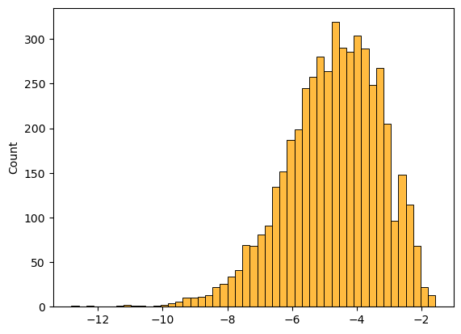

from feature_78_generation import *
%load_ext autoreload
%autoreload 2
The autoreload extension is already loaded. To reload it, use:
%reload_ext autoreload
finished_paths, unfinished_paths = load_paths(unquote_names=False, drop_timeouts=True)
nodes = pd.read_csv(GRAPH_METRICS_PATH)
display(finished_paths)
display(unfinished_paths)
| hashedIpAddress | timestamp | durationInSec | path | rating | |
|---|---|---|---|---|---|
| 0 | 6a3701d319fc3754 | 2011-02-15 03:26:49 | 166 | [14th_century, 15th_century, 16th_century, Pac... | NaN |
| 1 | 3824310e536af032 | 2012-08-12 06:36:52 | 88 | [14th_century, Europe, Africa, Atlantic_slave_... | 3.0 |
| 2 | 415612e93584d30e | 2012-10-03 21:10:40 | 138 | [14th_century, Niger, Nigeria, British_Empire,... | NaN |
| 3 | 64dd5cd342e3780c | 2010-02-08 07:25:25 | 37 | [14th_century, Renaissance, Ancient_Greece, Gr... | NaN |
| 4 | 015245d773376aab | 2013-04-23 15:27:08 | 175 | [14th_century, Italy, Roman_Catholic_Church, H... | 3.0 |
| ... | ... | ... | ... | ... | ... |
| 51313 | 15a13a1d66ef5456 | 2012-10-03 02:23:35 | 66 | [Yagan, Ancient_Egypt, Civilization] | NaN |
| 51314 | 2ef7ac844cefda58 | 2011-03-16 05:42:18 | 165 | [Yagan, Folklore, Brothers_Grimm, <, 19th_cent... | 3.0 |
| 51315 | 12863abb7887f890 | 2013-11-22 04:42:52 | 228 | [Yagan, Australia, England, France, United_Sta... | NaN |
| 51316 | 19f8284371753362 | 2011-02-27 07:42:47 | 56 | [Yarralumla%2C_Australian_Capital_Territory, A... | 1.0 |
| 51317 | 24b84602179de377 | 2011-10-09 01:11:41 | 30 | [Ziad_Jarrah, Germany, Jew] | NaN |
51318 rows × 5 columns
| index | hashedIpAddress | timestamp | durationInSec | path | target | type | |
|---|---|---|---|---|---|---|---|
| 0 | 2 | 2b015fb8181c48f2 | 2011-02-07 15:00:19 | 1818 | [Malawi, Democracy, Alexander_the_Great] | First_Crusade | timeout |
| 1 | 4 | 53a53bc244e08a6a | 2011-02-07 17:18:25 | 1808 | [Paraguay, Bolivia] | Mount_St._Helens | timeout |
| 2 | 5 | 131600803df4895e | 2011-02-07 17:42:37 | 2009 | [Agriculture, History_of_the_world, China, Yan... | Grand_Canal_of_China | timeout |
| 3 | 6 | 486bb79910fe9dd2 | 2011-02-07 18:01:00 | 1932 | [Mind, Christianity, Europe, Renaissance, Anci... | Scouting | timeout |
| 4 | 7 | 6d136e371e42474f | 2011-02-07 18:07:50 | 175 | [4-2-0, United_States, Agriculture, Sugar, Aus... | Cane_Toad | restart |
| ... | ... | ... | ... | ... | ... | ... | ... |
| 19656 | 24869 | 109ed71f571d86e9 | 2014-01-15 12:00:12 | 182 | [Turks_and_Caicos_Islands, United_States, Iraq... | Iraq_War | restart |
| 19657 | 24870 | 109ed71f571d86e9 | 2014-01-15 12:06:45 | 180 | [Franz_Kafka, Tuberculosis, World_Health_Organ... | Cholera | restart |
| 19658 | 24872 | 2e09a7224600a7cd | 2014-01-15 15:06:40 | 1900 | [Computer_programming, Linguistics, Culture, P... | The_Beatles | timeout |
| 19659 | 24873 | 60af9e2138051b96 | 2014-01-15 15:24:41 | 1903 | [Jamaica, United_Kingdom, World_War_II, Battle... | Alan_Turing | timeout |
| 19660 | 24874 | 1cf0cbb3281049ab | 2014-01-15 21:54:01 | 352 | [Mark_Antony, Rome, Tennis, Hawk-Eye, Computer] | Feather | restart |
19661 rows × 7 columns
paths_finished_modif = add_computed_graph_features(
finished_paths,
metrics_pickle_path="../data/p3_extra_data/finished_path_metrics.pkl"
)
display(paths_finished_modif)
Loading metrics from pickle...
Metric path_degree
Metric path_clustering
Metric path_degree_centrality
Metric path_betweenness
Metric path_closeness
| hashedIpAddress | timestamp | durationInSec | path | rating | path_degree_abs_sum | path_clustering_abs_sum | path_degree_centrality_abs_sum | path_betweenness_abs_sum | path_closeness_abs_sum | |
|---|---|---|---|---|---|---|---|---|---|---|
| 0 | 6a3701d319fc3754 | 2011-02-15 03:26:49 | 166 | [14th_century, 15th_century, 16th_century, Pac... | NaN | 5.197422 | -3.233355 | -3.234431 | -5.004633 | -2.964052 |
| 1 | 3824310e536af032 | 2012-08-12 06:36:52 | 88 | [14th_century, Europe, Africa, Atlantic_slave_... | 3.0 | 7.010212 | -2.318889 | -1.421642 | -3.524030 | -1.640078 |
| 2 | 415612e93584d30e | 2012-10-03 21:10:40 | 138 | [14th_century, Niger, Nigeria, British_Empire,... | NaN | 5.236336 | -3.212821 | -3.195518 | -4.962358 | -2.938361 |
| 3 | 64dd5cd342e3780c | 2010-02-08 07:25:25 | 37 | [14th_century, Renaissance, Ancient_Greece, Gr... | NaN | NaN | NaN | NaN | NaN | NaN |
| 4 | 015245d773376aab | 2013-04-23 15:27:08 | 175 | [14th_century, Italy, Roman_Catholic_Church, H... | 3.0 | 6.315864 | -2.737924 | -2.115989 | -4.991059 | -2.013457 |
| ... | ... | ... | ... | ... | ... | ... | ... | ... | ... | ... |
| 51315 | 15a13a1d66ef5456 | 2012-10-03 02:23:35 | 66 | [Yagan, Ancient_Egypt, Civilization] | NaN | 5.209486 | -2.320631 | -3.222367 | -5.666352 | -1.732727 |
| 51316 | 2ef7ac844cefda58 | 2011-03-16 05:42:18 | 165 | [Yagan, Folklore, Brothers_Grimm, <, 19th_cent... | 3.0 | 4.297096 | -4.423940 | -4.134757 | -5.967147 | -3.460478 |
| 51317 | 12863abb7887f890 | 2013-11-22 04:42:52 | 228 | [Yagan, Australia, England, France, United_Sta... | NaN | 6.343111 | -2.115506 | -2.088742 | -3.527183 | -2.438024 |
| 51318 | 19f8284371753362 | 2011-02-27 07:42:47 | 56 | [Yarralumla%2C_Australian_Capital_Territory, A... | 1.0 | 7.695758 | -1.820454 | -0.736095 | -2.147011 | -1.268453 |
| 51319 | 24b84602179de377 | 2011-10-09 01:11:41 | 30 | [Ziad_Jarrah, Germany, Jew] | NaN | 7.275172 | -1.595770 | -1.156681 | -3.333625 | -1.172824 |
51320 rows × 10 columns
paths_unfinished_modif = add_computed_graph_features(
unfinished_paths,
metrics_pickle_path="../data/p3_extra_data/unfinished_path_metrics.pkl"
)
display(paths_unfinished_modif)
Loading metrics from pickle...
Metric path_degree
Metric path_clustering
Metric path_degree_centrality
Metric path_betweenness
Metric path_closeness
| index | hashedIpAddress | timestamp | durationInSec | path | target | type | path_degree_abs_sum | path_clustering_abs_sum | path_degree_centrality_abs_sum | path_betweenness_abs_sum | path_closeness_abs_sum | |
|---|---|---|---|---|---|---|---|---|---|---|---|---|
| 0 | 2 | 2b015fb8181c48f2 | 2011-02-07 15:00:19 | 1818 | [Malawi, Democracy, Alexander_the_Great] | First_Crusade | timeout | 4.624973 | -1.658146 | -3.806880 | -6.527886 | -2.041349 |
| 1 | 4 | 53a53bc244e08a6a | 2011-02-07 17:18:25 | 1808 | [Paraguay, Bolivia] | Mount_St._Helens | timeout | NaN | NaN | NaN | NaN | NaN |
| 2 | 5 | 131600803df4895e | 2011-02-07 17:42:37 | 2009 | [Agriculture, History_of_the_world, China, Yan... | Grand_Canal_of_China | timeout | 6.429719 | -1.952055 | -2.002134 | -4.467183 | -1.925200 |
| 3 | 6 | 486bb79910fe9dd2 | 2011-02-07 18:01:00 | 1932 | [Mind, Christianity, Europe, Renaissance, Anci... | Scouting | timeout | 5.705032 | -3.544534 | -2.726821 | -4.845663 | -2.936609 |
| 4 | 7 | 6d136e371e42474f | 2011-02-07 18:07:50 | 175 | [4-2-0, United_States, Agriculture, Sugar, Aus... | Cane_Toad | restart | 7.585732 | -2.590255 | -0.846121 | -2.271594 | -0.927471 |
| ... | ... | ... | ... | ... | ... | ... | ... | ... | ... | ... | ... | ... |
| 19664 | 24869 | 109ed71f571d86e9 | 2014-01-15 12:00:12 | 182 | [Turks_and_Caicos_Islands, United_States, Iraq... | Iraq_War | restart | 7.555088 | -1.505405 | -0.876766 | -2.304742 | -1.574654 |
| 19665 | 24870 | 109ed71f571d86e9 | 2014-01-15 12:06:45 | 180 | [Franz_Kafka, Tuberculosis, World_Health_Organ... | Cholera | restart | 3.669951 | -3.305998 | -4.761902 | -7.644179 | -4.383847 |
| 19666 | 24872 | 2e09a7224600a7cd | 2014-01-15 15:06:40 | 1900 | [Computer_programming, Linguistics, Culture, P... | The_Beatles | timeout | 4.760035 | -2.802979 | -3.671818 | -6.478384 | -2.157703 |
| 19667 | 24873 | 60af9e2138051b96 | 2014-01-15 15:24:41 | 1903 | [Jamaica, United_Kingdom, World_War_II, Battle... | Alan_Turing | timeout | 7.158709 | -1.836719 | -1.273145 | -2.951980 | -1.724655 |
| 19668 | 24874 | 1cf0cbb3281049ab | 2014-01-15 21:54:01 | 352 | [Mark_Antony, Rome, Tennis, Hawk-Eye, Computer] | Feather | restart | 5.595124 | -1.730546 | -2.836729 | -5.768889 | -2.107167 |
19669 rows × 12 columns
metrics_dict = compute_path_metrics_w_nodes(
nodes, unfinished_paths, pickle_path="../data/p3_extra_data/unfinished_path_metrics.pkl"
)
Loading metrics from pickle...
display(metrics_dict["path_degree"].reset_index(drop=True))
0 [158, 197, 134]
1 [59, 129]
2 [298, 154, 586, 38]
3 [40, 392, 1092, 185, 228, 209, 494]
4 [8, 1845, 298, 133, 649]
...
19656 [42, 1845, 210, 444, 82, 126]
19657 [41, 105, 102, 97, 221, 122, 109]
19658 [20, 61, 155, 72]
19659 [133, 1140, 870, 27]
19660 [35, 286, 119, 14, 123]
Length: 19661, dtype: object
for k,v in metrics_dict.items():
too_short = 0
all_nan = 0
max_at_0 = 0
max_at_end = 0
max_at_1 = 0
max_at_beforelast = 0
print(f"Metric {k} of length {len(v)}")
for i, val in enumerate(v):
if len(val) < 3:
too_short += 1
continue
if np.isnan(val).all():
all_nan += 1
continue
if val[0] == np.nanmax(val):
max_at_0 += 1
continue
if val[-1] == np.nanmax(val):
max_at_end += 1
continue
if val[1] == np.nanmax(val):
max_at_1 += 1
continue
if val[-2] == np.nanmax(val):
max_at_beforelast += 1
continue
print(f"Too short: {too_short}")
print(f"All nan: {all_nan}")
print(f"Max at 0: {max_at_0}")
print(f"Max at end: {max_at_end}")
print(f"Total issues: {too_short + all_nan + max_at_0 + max_at_end}")
print(f"Total paths: {len(v)}")
print("_"*20)
Metric path_degree of length 19661
Too short: 3580
All nan: 0
Max at 0: 636
Max at end: 3094
Total issues: 7310
Total paths: 19661
____________________
Metric path_clustering of length 19661
Too short: 3580
All nan: 0
Max at 0: 7197
Max at end: 2832
Total issues: 13609
Total paths: 19661
____________________
Metric path_degree_centrality of length 19661
Too short: 3580
All nan: 0
Max at 0: 636
Max at end: 3094
Total issues: 7310
Total paths: 19661
____________________
Metric path_betweenness of length 19661
Too short: 3580
All nan: 0
Max at 0: 716
Max at end: 3010
Total issues: 7306
Total paths: 19661
____________________
Metric path_closeness of length 19661
Too short: 3580
All nan: 0
Max at 0: 611
Max at end: 3070
Total issues: 7261
Total paths: 19661
____________________
%load_ext autoreload
%autoreload 2
The autoreload extension is already loaded. To reload it, use:
%reload_ext autoreload
slopes = compute_metrics_slopes(metrics_dict)
# slopes = compute_metrics_mean_diff(metrics_dict)
# slopes = compute_metrics_delta_norm(metrics_dict)
c:\Users\Cyril\anaconda3\envs\DLbiomed\lib\site-packages\numpy\lib\polynomial.py:667: RuntimeWarning: invalid value encountered in divide
lhs /= scale
c:\Users\Cyril\anaconda3\envs\DLbiomed\lib\site-packages\numpy\lib\polynomial.py:667: RuntimeWarning: invalid value encountered in divide
lhs /= scale
c:\Users\Cyril\anaconda3\envs\DLbiomed\lib\site-packages\numpy\lib\polynomial.py:667: RuntimeWarning: invalid value encountered in divide
lhs /= scale
c:\Users\Cyril\anaconda3\envs\DLbiomed\lib\site-packages\numpy\lib\polynomial.py:667: RuntimeWarning: invalid value encountered in divide
lhs /= scale
c:\Users\Cyril\anaconda3\envs\DLbiomed\lib\site-packages\numpy\lib\polynomial.py:667: RuntimeWarning: invalid value encountered in divide
lhs /= scale
slopes["path_degree"]
| path_degree_slope_before | path_degree_slope_after | |
|---|---|---|
| 0 | NaN | NaN |
| 1 | NaN | NaN |
| 2 | -72.000 | NaN |
| 3 | 176.000 | 22.700000 |
| 4 | NaN | 58.500000 |
| ... | ... | ... |
| 19656 | NaN | -15.350000 |
| 19657 | 4.125 | -6.500000 |
| 19658 | 20.500 | NaN |
| 19659 | NaN | -421.500000 |
| 19660 | NaN | 0.666667 |
19661 rows × 2 columns
slopes["path_degree"].isna().sum()
path_degree_slope_before 9608
path_degree_slope_after 10399
dtype: int64
import seaborn as sns
import matplotlib.pyplot as plt
logging.getLogger().setLevel(logging.INFO)
for k,v in slopes.items():
sns.histplot(data=v, x=v.columns[0], color="orange")
sns.histplot(data=v, x=v.columns[1], color="blue")
plt.show()
# metric = metric.fillna(0)
# sns.histplot(data=metric, x=metric.columns[0], color="orange")
# sns.histplot(data=metric, x=metric.columns[1], color="blue")
# plt.show()

slopes_temp = slopes.copy()
for k,v in slopes.items():
print(f"Metric {k}")
slopes_temp[str(k)+"_abs_sum"] = v[str(k)+"_slope_before"].abs() + v[str(k)+"_slope_after"].abs()
slopes = slopes_temp
Metric path_degree
Metric path_clustering
Metric path_degree_centrality
Metric path_betweenness
Metric path_closeness
for k,v in slopes.items():
if "abs_sum" in k:
data = v.apply(lambda x: np.log(x+1e-6))
sns.histplot(data=data, color="orange")
plt.show()

# plot heatmap of correlation between metrics with abs_sum
slopes_abs_sum = {}
for k,v in slopes.items():
if "abs_sum" in k:
slopes_abs_sum[k] = v.apply(lambda x: np.log(x+1e-6))
slopes_abs_sum = pd.DataFrame(slopes_abs_sum)
sns.pairplot(slopes_abs_sum, corner=True)
c:\Users\Cyril\anaconda3\envs\DLbiomed\lib\site-packages\seaborn\axisgrid.py:123: UserWarning: The figure layout has changed to tight
self._figure.tight_layout(*args, **kwargs)
<seaborn.axisgrid.PairGrid at 0x198e14d14c0>
finished_metrics_dict = compute_path_metrics_w_nodes(
nodes, finished_paths, pickle_path="../data/p3_extra_data/finished_path_metrics.pkl"
)
Loading metrics from pickle...
for k,v in finished_metrics_dict.items():
too_short = 0
all_nan = 0
max_at_0 = 0
max_at_end = 0
max_at_1 = 0
max_at_beforelast = 0
print(f"Metric {k} of length {len(v)}")
for i, val in enumerate(v):
if len(val) < 3:
too_short += 1
continue
if np.isnan(val).all():
all_nan += 1
continue
if val[0] == np.nanmax(val):
max_at_0 += 1
continue
if val[-1] == np.nanmax(val):
max_at_end += 1
continue
if val[1] == np.nanmax(val):
max_at_1 += 1
continue
if val[-2] == np.nanmax(val):
max_at_beforelast += 1
continue
print(f"Too short: {too_short}")
print(f"All nan: {all_nan}")
print(f"Max at 0: {max_at_0}")
print(f"Max at end: {max_at_end}")
print(f"Total issues: {too_short + all_nan + max_at_0 + max_at_end}")
print(f"Total paths: {len(v)}")
print("_"*20)
Metric path_degree of length 51318
Too short: 809
All nan: 0
Max at 0: 1706
Max at end: 1851
Total issues: 4366
Total paths: 51318
____________________
Metric path_clustering of length 51318
Too short: 809
All nan: 0
Max at 0: 19413
Max at end: 16854
Total issues: 37076
Total paths: 51318
____________________
Metric path_degree_centrality of length 51318
Too short: 809
All nan: 0
Max at 0: 1706
Max at end: 1851
Total issues: 4366
Total paths: 51318
____________________
Metric path_betweenness of length 51318
Too short: 809
All nan: 0
Max at 0: 1749
Max at end: 1984
Total issues: 4542
Total paths: 51318
____________________
Metric path_closeness of length 51318
Too short: 809
All nan: 0
Max at 0: 1588
Max at end: 2089
Total issues: 4486
Total paths: 51318
____________________
finished_metrics_dict["path_degree"]
0 [102, 157, 216, 272, 375, 20, 689, 73, 31]
1 [102, 1092, 689, 73, 31]
2 [102, 109, 173, 271, 220, 689, 73, 31]
3 [102, 185, 228, 360]
4 [102, 635, 303, 64, 158, 220, 128]
...
51313 [20, 191, 179]
51314 [20, 65, 14, 453, 62, 22, 132, 47]
51315 [20, 649, 923, 1044, 1845, 119, 27]
51316 [41, 649, 1845, 97]
51317 [26, 912, 354]
Length: 51318, dtype: object
finished_metrics_dict["path_degree"].reset_index(drop=True)
0 [102, 157, 216, 272, 375, 20, 689, 73, 31]
1 [102, 1092, 689, 73, 31]
2 [102, 109, 173, 271, 220, 689, 73, 31]
3 [102, 185, 228, 360]
4 [102, 635, 303, 64, 158, 220, 128]
...
51313 [20, 191, 179]
51314 [20, 65, 14, 453, 62, 22, 132, 47]
51315 [20, 649, 923, 1044, 1845, 119, 27]
51316 [41, 649, 1845, 97]
51317 [26, 912, 354]
Length: 51318, dtype: object
# count number of arrays which contain at least one nan
count = 0
for path in finished_metrics_dict["path_degree"]:
if np.isnan(path).any():
# print(path)
count += 1
count
38
# finished_slopes = compute_metrics_slopes(finished_metrics_dict)
finished_slopes = compute_metrics_mean_diff(finished_metrics_dict)
# finished_slopes = compute_metrics_delta_norm(finished_metrics_dict)
finished_slopes["path_degree"]
| path_degree_slope_before | path_degree_slope_after | |
|---|---|---|
| 0 | 16.305556 | -164.500000 |
| 1 | 990.000000 | -117.888889 |
| 2 | 23.480000 | -164.500000 |
| 3 | NaN | NaN |
| 4 | 533.000000 | -20.280000 |
| ... | ... | ... |
| 51313 | 171.000000 | -12.000000 |
| 51314 | 48.111111 | -25.375000 |
| 51315 | 114.062500 | -454.500000 |
| 51316 | 451.000000 | -1748.000000 |
| 51317 | 886.000000 | -558.000000 |
51318 rows × 2 columns
finished_slopes["path_degree"].isna().sum()
path_degree_slope_before 4368
path_degree_slope_after 4350
dtype: int64
finished_paths
| hashedIpAddress | timestamp | durationInSec | path | rating | |
|---|---|---|---|---|---|
| 0 | 6a3701d319fc3754 | 2011-02-15 03:26:49 | 166 | [14th_century, 15th_century, 16th_century, Pac... | NaN |
| 1 | 3824310e536af032 | 2012-08-12 06:36:52 | 88 | [14th_century, Europe, Africa, Atlantic_slave_... | 3.0 |
| 2 | 415612e93584d30e | 2012-10-03 21:10:40 | 138 | [14th_century, Niger, Nigeria, British_Empire,... | NaN |
| 3 | 64dd5cd342e3780c | 2010-02-08 07:25:25 | 37 | [14th_century, Renaissance, Ancient_Greece, Gr... | NaN |
| 4 | 015245d773376aab | 2013-04-23 15:27:08 | 175 | [14th_century, Italy, Roman_Catholic_Church, H... | 3.0 |
| ... | ... | ... | ... | ... | ... |
| 51313 | 15a13a1d66ef5456 | 2012-10-03 02:23:35 | 66 | [Yagan, Ancient_Egypt, Civilization] | NaN |
| 51314 | 2ef7ac844cefda58 | 2011-03-16 05:42:18 | 165 | [Yagan, Folklore, Brothers_Grimm, <, 19th_cent... | 3.0 |
| 51315 | 12863abb7887f890 | 2013-11-22 04:42:52 | 228 | [Yagan, Australia, England, France, United_Sta... | NaN |
| 51316 | 19f8284371753362 | 2011-02-27 07:42:47 | 56 | [Yarralumla%2C_Australian_Capital_Territory, A... | 1.0 |
| 51317 | 24b84602179de377 | 2011-10-09 01:11:41 | 30 | [Ziad_Jarrah, Germany, Jew] | NaN |
51318 rows × 5 columns
for k,v in finished_slopes.items():
sns.histplot(data=v, x=v.columns[0], color="orange")
sns.histplot(data=v, x=v.columns[1], color="blue")
plt.show()
finished_slopes_temp = finished_slopes.copy()
for k,v in finished_slopes.items():
print(f"Metric {k}")
finished_slopes_temp[str(k)+"_abs_sum"] = v[str(k)+"_slope_before"].abs() + v[str(k)+"_slope_after"].abs()
finished_slopes = finished_slopes_temp
Metric path_degree
Metric path_clustering
Metric path_degree_centrality
Metric path_betweenness
Metric path_closeness
for k,v in finished_slopes.items():
if "abs_sum" in k:
data = v.apply(lambda x: np.log(x+1e-6))
sns.histplot(data=data, color="orange")
plt.show()

finished_slopes_abs_sum = {}
for k,v in finished_slopes.items():
if "abs_sum" in k:
finished_slopes_abs_sum[k] = v.apply(lambda x: np.log(x+1e-6))
finished_slopes_abs_sum = pd.DataFrame(finished_slopes_abs_sum)
sns.pairplot(finished_slopes_abs_sum, corner=True)
c:\Users\Cyril\anaconda3\envs\DLbiomed\lib\site-packages\seaborn\axisgrid.py:123: UserWarning: The figure layout has changed to tight
self._figure.tight_layout(*args, **kwargs)
<seaborn.axisgrid.PairGrid at 0x198eb56fa60>
slopes_unfin_df = pd.DataFrame()
for k,v in slopes.items():
slopes_unfin_df = pd.concat([slopes_unfin_df, v], axis=1)
slopes_unfin_df
| path_degree_slope_before | path_degree_slope_after | path_clustering_slope_before | path_clustering_slope_after | path_degree_centrality_slope_before | path_degree_centrality_slope_after | path_betweenness_slope_before | path_betweenness_slope_after | path_closeness_slope_before | path_closeness_slope_after | 0 | 0 | 0 | 0 | 0 | |
|---|---|---|---|---|---|---|---|---|---|---|---|---|---|---|---|
| 0 | NaN | NaN | NaN | NaN | NaN | NaN | NaN | NaN | NaN | NaN | NaN | NaN | NaN | NaN | NaN |
| 1 | NaN | NaN | NaN | NaN | NaN | NaN | NaN | NaN | NaN | NaN | NaN | NaN | NaN | NaN | NaN |
| 2 | -72.000 | NaN | 0.033226 | NaN | -0.015683 | NaN | -0.002369 | NaN | -0.068352 | NaN | NaN | NaN | NaN | NaN | NaN |
| 3 | 176.000 | 22.700000 | -0.046387 | -0.001545 | 0.038336 | 0.004944 | 0.001522 | 0.000446 | 0.067403 | 0.003321 | 198.700 | 0.047933 | 0.043280 | 0.001968 | 0.070723 |
| 4 | NaN | 58.500000 | NaN | -0.003034 | NaN | 0.012742 | NaN | 0.001267 | NaN | 0.004994 | NaN | NaN | NaN | NaN | NaN |
| ... | ... | ... | ... | ... | ... | ... | ... | ... | ... | ... | ... | ... | ... | ... | ... |
| 19656 | NaN | -15.350000 | NaN | -0.003174 | NaN | -0.003343 | NaN | -0.000127 | NaN | -0.004025 | NaN | NaN | NaN | NaN | NaN |
| 19657 | 4.125 | -6.500000 | -0.002172 | 0.014916 | 0.000898 | -0.001416 | -0.000007 | -0.000098 | 0.001818 | 0.014254 | 10.625 | 0.017088 | 0.002314 | 0.000105 | 0.016072 |
| 19658 | 20.500 | NaN | -0.026951 | NaN | 0.004465 | NaN | 0.000180 | NaN | 0.044126 | NaN | NaN | NaN | NaN | NaN | NaN |
| 19659 | NaN | -421.500000 | NaN | 0.128218 | NaN | -0.091810 | NaN | -0.007611 | NaN | -0.089214 | NaN | NaN | NaN | NaN | NaN |
| 19660 | NaN | 0.666667 | NaN | -0.012383 | NaN | 0.000145 | NaN | 0.000500 | NaN | -0.000780 | NaN | NaN | NaN | NaN | NaN |
19661 rows × 15 columns
paths_unfinised_modif = unfinished_paths.copy()
paths_unfinised_modif = pd.concat([paths_unfinised_modif, slopes_unfin_df], axis=1)
paths_unfinised_modif
| index | hashedIpAddress | timestamp | durationInSec | path | target | type | path_degree_slope_before | path_degree_slope_after | path_clustering_slope_before | ... | path_degree_centrality_slope_after | path_betweenness_slope_before | path_betweenness_slope_after | path_closeness_slope_before | path_closeness_slope_after | 0 | 0 | 0 | 0 | 0 | |
|---|---|---|---|---|---|---|---|---|---|---|---|---|---|---|---|---|---|---|---|---|---|
| 0 | 2 | 2b015fb8181c48f2 | 2011-02-07 15:00:19 | 1818 | [Malawi, Democracy, Alexander_the_Great] | First_Crusade | timeout | NaN | NaN | NaN | ... | NaN | NaN | NaN | NaN | NaN | NaN | NaN | NaN | NaN | NaN |
| 1 | 4 | 53a53bc244e08a6a | 2011-02-07 17:18:25 | 1808 | [Paraguay, Bolivia] | Mount_St._Helens | timeout | NaN | NaN | NaN | ... | NaN | NaN | NaN | NaN | NaN | NaN | NaN | NaN | NaN | NaN |
| 2 | 5 | 131600803df4895e | 2011-02-07 17:42:37 | 2009 | [Agriculture, History_of_the_world, China, Yan... | Grand_Canal_of_China | timeout | -72.000 | NaN | 0.033226 | ... | NaN | -0.002369 | NaN | -0.068352 | NaN | NaN | NaN | NaN | NaN | NaN |
| 3 | 6 | 486bb79910fe9dd2 | 2011-02-07 18:01:00 | 1932 | [Mind, Christianity, Europe, Renaissance, Anci... | Scouting | timeout | 176.000 | 22.700000 | -0.046387 | ... | 0.004944 | 0.001522 | 0.000446 | 0.067403 | 0.003321 | 198.700 | 0.047933 | 0.043280 | 0.001968 | 0.070723 |
| 4 | 7 | 6d136e371e42474f | 2011-02-07 18:07:50 | 175 | [4-2-0, United_States, Agriculture, Sugar, Aus... | Cane_Toad | restart | NaN | 58.500000 | NaN | ... | 0.012742 | NaN | 0.001267 | NaN | 0.004994 | NaN | NaN | NaN | NaN | NaN |
| ... | ... | ... | ... | ... | ... | ... | ... | ... | ... | ... | ... | ... | ... | ... | ... | ... | ... | ... | ... | ... | ... |
| 19656 | 24869 | 109ed71f571d86e9 | 2014-01-15 12:00:12 | 182 | [Turks_and_Caicos_Islands, United_States, Iraq... | Iraq_War | restart | NaN | -15.350000 | NaN | ... | -0.003343 | NaN | -0.000127 | NaN | -0.004025 | NaN | NaN | NaN | NaN | NaN |
| 19657 | 24870 | 109ed71f571d86e9 | 2014-01-15 12:06:45 | 180 | [Franz_Kafka, Tuberculosis, World_Health_Organ... | Cholera | restart | 4.125 | -6.500000 | -0.002172 | ... | -0.001416 | -0.000007 | -0.000098 | 0.001818 | 0.014254 | 10.625 | 0.017088 | 0.002314 | 0.000105 | 0.016072 |
| 19658 | 24872 | 2e09a7224600a7cd | 2014-01-15 15:06:40 | 1900 | [Computer_programming, Linguistics, Culture, P... | The_Beatles | timeout | 20.500 | NaN | -0.026951 | ... | NaN | 0.000180 | NaN | 0.044126 | NaN | NaN | NaN | NaN | NaN | NaN |
| 19659 | 24873 | 60af9e2138051b96 | 2014-01-15 15:24:41 | 1903 | [Jamaica, United_Kingdom, World_War_II, Battle... | Alan_Turing | timeout | NaN | -421.500000 | NaN | ... | -0.091810 | NaN | -0.007611 | NaN | -0.089214 | NaN | NaN | NaN | NaN | NaN |
| 19660 | 24874 | 1cf0cbb3281049ab | 2014-01-15 21:54:01 | 352 | [Mark_Antony, Rome, Tennis, Hawk-Eye, Computer] | Feather | restart | NaN | 0.666667 | NaN | ... | 0.000145 | NaN | 0.000500 | NaN | -0.000780 | NaN | NaN | NaN | NaN | NaN |
19661 rows × 22 columns
# paths_unfinised_modif.to_csv("paths_unfinised_modif.csv", index=False)
slopes_fin_df = pd.DataFrame()
for k,v in finished_slopes.items():
slopes_fin_df = pd.concat([slopes_fin_df, v], axis=1)
slopes_fin_df
| path_degree_slope_before | path_degree_slope_after | path_clustering_slope_before | path_clustering_slope_after | path_degree_centrality_slope_before | path_degree_centrality_slope_after | path_betweenness_slope_before | path_betweenness_slope_after | path_closeness_slope_before | path_closeness_slope_after | 0 | 0 | 0 | 0 | 0 | |
|---|---|---|---|---|---|---|---|---|---|---|---|---|---|---|---|
| 0 | 16.305556 | -164.500000 | -0.001859 | 0.037566 | 0.003552 | -0.035831 | 0.000658 | -0.006049 | 0.003052 | -0.048557 | 180.805556 | 0.039425 | 0.039383 | 0.006707 | 0.051609 |
| 1 | 990.000000 | -117.888889 | -0.080210 | 0.018173 | 0.215639 | -0.025678 | 0.026482 | -0.002998 | 0.166134 | -0.027831 | 1107.888889 | 0.098383 | 0.241318 | 0.029480 | 0.193965 |
| 2 | 23.480000 | -164.500000 | -0.002677 | 0.037566 | 0.005114 | -0.035831 | 0.000948 | -0.006049 | 0.004395 | -0.048557 | 187.980000 | 0.040243 | 0.040945 | 0.006996 | 0.052952 |
| 3 | NaN | NaN | NaN | NaN | NaN | NaN | NaN | NaN | NaN | NaN | NaN | NaN | NaN | NaN | NaN |
| 4 | 533.000000 | -20.280000 | -0.062775 | 0.001929 | 0.116097 | -0.004417 | 0.006578 | -0.000221 | 0.128796 | -0.004730 | 553.280000 | 0.064705 | 0.120514 | 0.006798 | 0.133526 |
| ... | ... | ... | ... | ... | ... | ... | ... | ... | ... | ... | ... | ... | ... | ... | ... |
| 51313 | 171.000000 | -12.000000 | -0.071107 | 0.027105 | 0.037247 | -0.002614 | 0.002657 | -0.000804 | 0.157917 | -0.018885 | 183.000000 | 0.098212 | 0.039861 | 0.003460 | 0.176802 |
| 51314 | 48.111111 | -25.375000 | -0.009907 | 0.002080 | 0.010479 | -0.005527 | 0.001647 | -0.000915 | 0.023343 | -0.008072 | 73.486111 | 0.011987 | 0.016007 | 0.002562 | 0.031415 |
| 51315 | 114.062500 | -454.500000 | -0.006783 | 0.113789 | 0.024845 | -0.098998 | 0.005880 | -0.023507 | 0.020834 | -0.066499 | 568.562500 | 0.120572 | 0.123843 | 0.029388 | 0.087333 |
| 51316 | 451.000000 | -1748.000000 | -0.057506 | 0.104447 | 0.098236 | -0.380745 | 0.023522 | -0.093311 | 0.081910 | -0.199357 | 2199.000000 | 0.161952 | 0.478981 | 0.116833 | 0.281266 |
| 51317 | 886.000000 | -558.000000 | -0.178825 | 0.023928 | 0.192986 | -0.121542 | 0.019406 | -0.016258 | 0.240087 | -0.069404 | 1444.000000 | 0.202752 | 0.314528 | 0.035664 | 0.309492 |
51318 rows × 15 columns
finished_paths_modif = finished_paths.copy()
finished_paths_modif = pd.concat([finished_paths_modif, slopes_fin_df], axis=1)
finished_paths_modif
| hashedIpAddress | timestamp | durationInSec | path | rating | path_degree_slope_before | path_degree_slope_after | path_clustering_slope_before | path_clustering_slope_after | path_degree_centrality_slope_before | path_degree_centrality_slope_after | path_betweenness_slope_before | path_betweenness_slope_after | path_closeness_slope_before | path_closeness_slope_after | 0 | 0 | 0 | 0 | 0 | |
|---|---|---|---|---|---|---|---|---|---|---|---|---|---|---|---|---|---|---|---|---|
| 0 | 6a3701d319fc3754 | 2011-02-15 03:26:49 | 166 | [14th_century, 15th_century, 16th_century, Pac... | NaN | 16.305556 | -164.500000 | -0.001859 | 0.037566 | 0.003552 | -0.035831 | 0.000658 | -0.006049 | 0.003052 | -0.048557 | 180.805556 | 0.039425 | 0.039383 | 0.006707 | 0.051609 |
| 1 | 3824310e536af032 | 2012-08-12 06:36:52 | 88 | [14th_century, Europe, Africa, Atlantic_slave_... | 3.0 | 990.000000 | -117.888889 | -0.080210 | 0.018173 | 0.215639 | -0.025678 | 0.026482 | -0.002998 | 0.166134 | -0.027831 | 1107.888889 | 0.098383 | 0.241318 | 0.029480 | 0.193965 |
| 2 | 415612e93584d30e | 2012-10-03 21:10:40 | 138 | [14th_century, Niger, Nigeria, British_Empire,... | NaN | 23.480000 | -164.500000 | -0.002677 | 0.037566 | 0.005114 | -0.035831 | 0.000948 | -0.006049 | 0.004395 | -0.048557 | 187.980000 | 0.040243 | 0.040945 | 0.006996 | 0.052952 |
| 3 | 64dd5cd342e3780c | 2010-02-08 07:25:25 | 37 | [14th_century, Renaissance, Ancient_Greece, Gr... | NaN | NaN | NaN | NaN | NaN | NaN | NaN | NaN | NaN | NaN | NaN | NaN | NaN | NaN | NaN | NaN |
| 4 | 015245d773376aab | 2013-04-23 15:27:08 | 175 | [14th_century, Italy, Roman_Catholic_Church, H... | 3.0 | 533.000000 | -20.280000 | -0.062775 | 0.001929 | 0.116097 | -0.004417 | 0.006578 | -0.000221 | 0.128796 | -0.004730 | 553.280000 | 0.064705 | 0.120514 | 0.006798 | 0.133526 |
| ... | ... | ... | ... | ... | ... | ... | ... | ... | ... | ... | ... | ... | ... | ... | ... | ... | ... | ... | ... | ... |
| 51313 | 15a13a1d66ef5456 | 2012-10-03 02:23:35 | 66 | [Yagan, Ancient_Egypt, Civilization] | NaN | 171.000000 | -12.000000 | -0.071107 | 0.027105 | 0.037247 | -0.002614 | 0.002657 | -0.000804 | 0.157917 | -0.018885 | 183.000000 | 0.098212 | 0.039861 | 0.003460 | 0.176802 |
| 51314 | 2ef7ac844cefda58 | 2011-03-16 05:42:18 | 165 | [Yagan, Folklore, Brothers_Grimm, <, 19th_cent... | 3.0 | 48.111111 | -25.375000 | -0.009907 | 0.002080 | 0.010479 | -0.005527 | 0.001647 | -0.000915 | 0.023343 | -0.008072 | 73.486111 | 0.011987 | 0.016007 | 0.002562 | 0.031415 |
| 51315 | 12863abb7887f890 | 2013-11-22 04:42:52 | 228 | [Yagan, Australia, England, France, United_Sta... | NaN | 114.062500 | -454.500000 | -0.006783 | 0.113789 | 0.024845 | -0.098998 | 0.005880 | -0.023507 | 0.020834 | -0.066499 | 568.562500 | 0.120572 | 0.123843 | 0.029388 | 0.087333 |
| 51316 | 19f8284371753362 | 2011-02-27 07:42:47 | 56 | [Yarralumla%2C_Australian_Capital_Territory, A... | 1.0 | 451.000000 | -1748.000000 | -0.057506 | 0.104447 | 0.098236 | -0.380745 | 0.023522 | -0.093311 | 0.081910 | -0.199357 | 2199.000000 | 0.161952 | 0.478981 | 0.116833 | 0.281266 |
| 51317 | 24b84602179de377 | 2011-10-09 01:11:41 | 30 | [Ziad_Jarrah, Germany, Jew] | NaN | 886.000000 | -558.000000 | -0.178825 | 0.023928 | 0.192986 | -0.121542 | 0.019406 | -0.016258 | 0.240087 | -0.069404 | 1444.000000 | 0.202752 | 0.314528 | 0.035664 | 0.309492 |
51318 rows × 20 columns